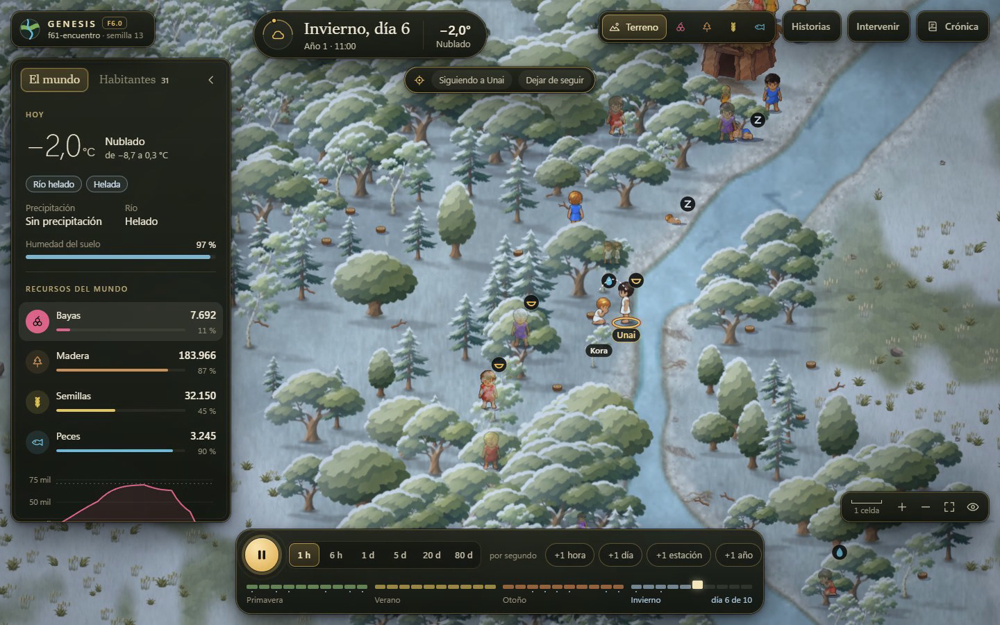
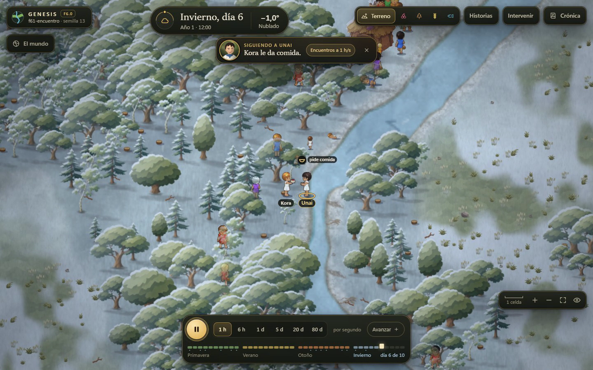
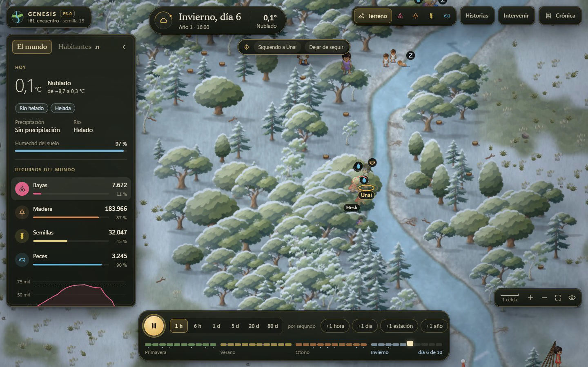
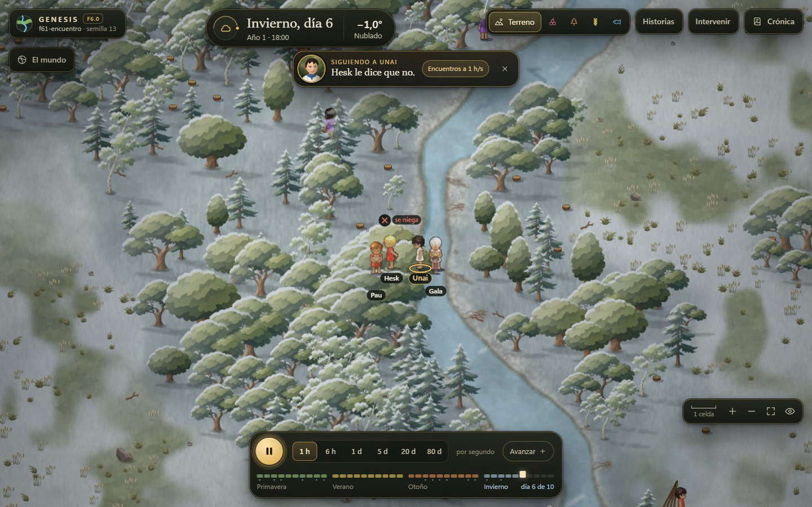
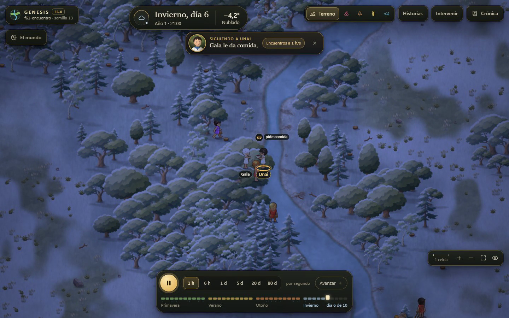
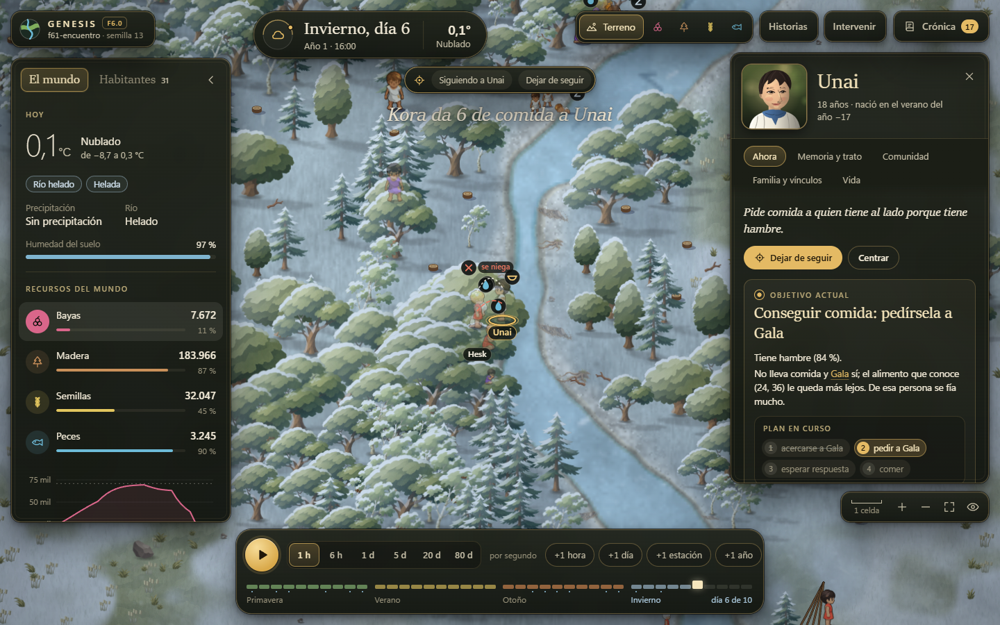
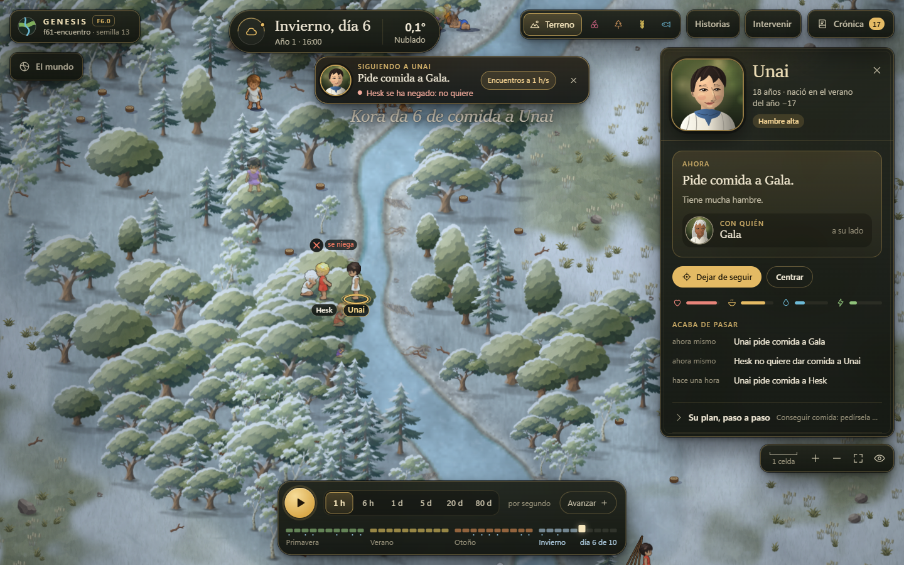
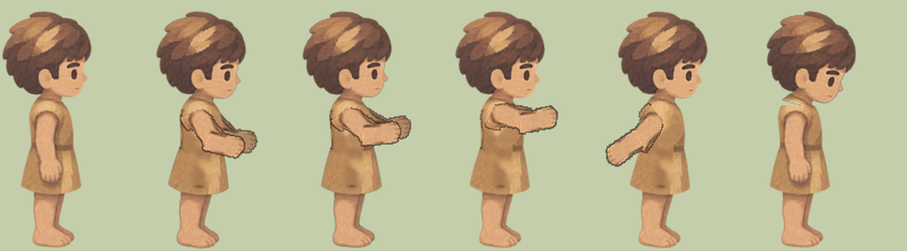

Las imágenes y vídeos se cargan desde la carpeta genesis-evidencias, junto al proyecto. Ver los archivos en GitHub.
Pedir comida: antes y después
Semilla 13, reglas habituales con planes familiares, sin modelo local, sin intervenir. Partida guardada en la hora 849 (día 36, 9:00) y vista a 1 hora por segundo, siguiendo a Unai, con la ficha cerrada y el mismo zoom (44 px por celda), en 1440 × 900. Lo que se ve son sucesos reales del motor: Unai pide a Kora y Kora le da 6; va junto a Hesk, le pide y Hesk se niega («no quiere»); pide a Gala y Gala le da 6. Los preparativos solo fijan la hora de guardado, no los desenlaces.
Escena completa, mismo instante
A escala real, recortado alrededor de Unai
Entrega, con la ficha cerrada


Negativa, con la ficha cerrada



Ficha del habitante, misma hora (16:00)


Poses
